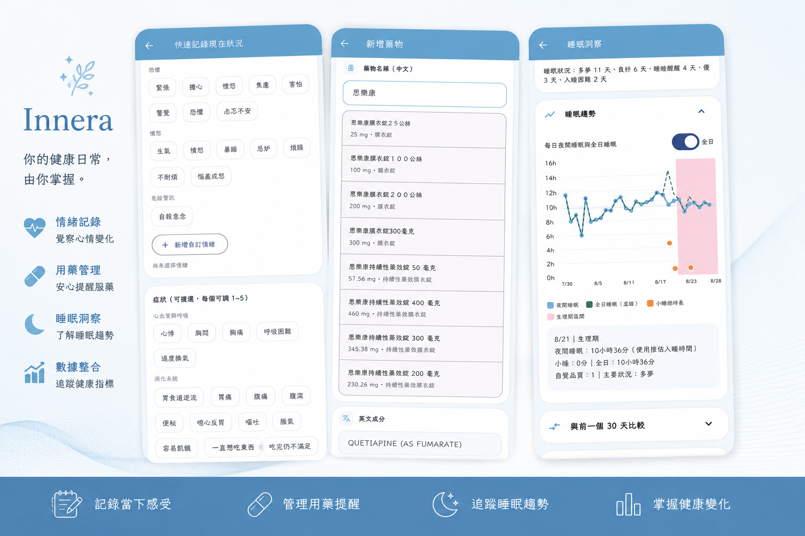
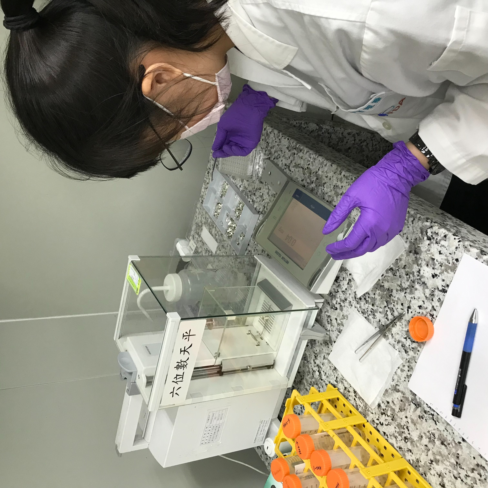
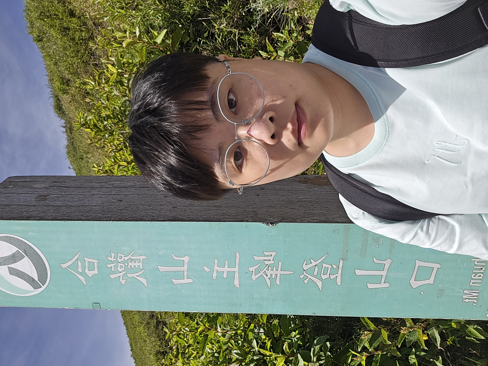

好奇
遇到不理解的事情， 我通常會想知道它為什麼會這樣。
HELLO, I'M
我不是沿著單一路線前進的人。
從食品營養、研究，到後來接觸 AI 與數位工具， 我一直喜歡探索不同領域， 也喜歡把想法實際做出來。
ABOUT ME
我畢業於食品營養相關科系， 大學期間接觸研究與實驗， 也參與過研究計畫的撰寫。
我一直很喜歡研究事情背後的原因。 遇到不熟悉的問題時， 我通常會先查資料、理解背景， 再把複雜的內容慢慢整理成自己可以理解的方式。
後來接觸生成式 AI 之後， 我開始嘗試把原本只存在腦中的想法做成實際作品。 在這個過程裡，我也慢慢發現， 自己真正喜歡的不是單一領域， 而是學習、整理、嘗試， 再把結果做出來的過程。
遇到不理解的事情， 我通常會想知道它為什麼會這樣。
面對很多資訊時， 我習慣先分類、找脈絡， 再慢慢釐清問題。
比起一直停留在想法， 我更喜歡先做出第一個版本， 再慢慢修正。
A FEW THINGS ABOUT ME
01
我的學習背景從食品與營養開始， 也讓我習慣從健康、飲食與人體的角度理解問題。
02
從研究計畫、文獻整理到實際實驗操作， 我很享受把一個問題慢慢拆開，再用資料和結果找答案。
03
我喜歡研究解法、記住規律， 也享受把看起來混亂的東西，一步一步整理回有秩序的過程。
04
我透過生成式 AI 協助開發與除錯， 把原本不熟悉的程式世界，變成可以實際完成想法的工具。
THINGS I'VE DONE
FEATURED PROJECT
從想法開始的數位健康 App
Innera 是我從需求發想開始， 持續透過 AI 輔助開發完成的數位健康 App。
從功能規劃、操作流程、畫面設計， 到實際測試與修改， 我在一次次嘗試中慢慢把原本模糊的構想， 變成可以真正操作的產品。
我不是資訊工程背景， 因此開發過程中大量使用生成式 AI 協助理解、修改與除錯； 而我主要負責的是把需求說清楚、 判斷結果是否符合預期， 以及持續找出下一個需要修正的問題。

RESEARCH EXPERIENCE
大學期間，我參與過食品相關研究計畫， 包含研究計畫撰寫、 文獻整理與多項實驗操作。
研究內容曾涉及植物乳桿菌醱酵植物奶、 理化特性與抗氧化活性等主題。 這段經驗讓我實際接觸研究從問題形成、 資料蒐集到實驗執行的過程。

SKILLS & TOOLS
HOW I WORK
面對陌生問題時， 我通常會先查資料、理解背景， 而不是急著直接找答案。
如果一次處理不了， 我會把問題拆成比較小的部分， 一項一項確認。
我不太喜歡一直停留在構想階段， 比較習慣先做出一個可以測試的版本。
如果結果和預期不同， 我會回頭確認問題出在哪裡， 再繼續修正。
CURRENTLY EXPLORING
仍然會持續閱讀食品、 營養與人體健康相關內容。
對日常健康資訊如何被記錄、 整理與轉化成有意義的資料感興趣。
最近正在了解睡眠測量、 穿戴式裝置與實際生理訊號之間的關係。
這些目前主要是我持續閱讀、學習與探索的方向， 部分想法仍在發展中， 並非已確立的研究或職涯方向。
BEYOND WORK
KEEP LEARNING
有時是研究資料， 有時是新的數位工具， 也可能只是突然對某個問題產生興趣， 然後一路查下去。
KEEP MOVING
工作與學習之外， 運動也是我生活中很重要的一部分。 對我來說， 學習新的動作和練習一項技能， 其實跟解決問題很像。
